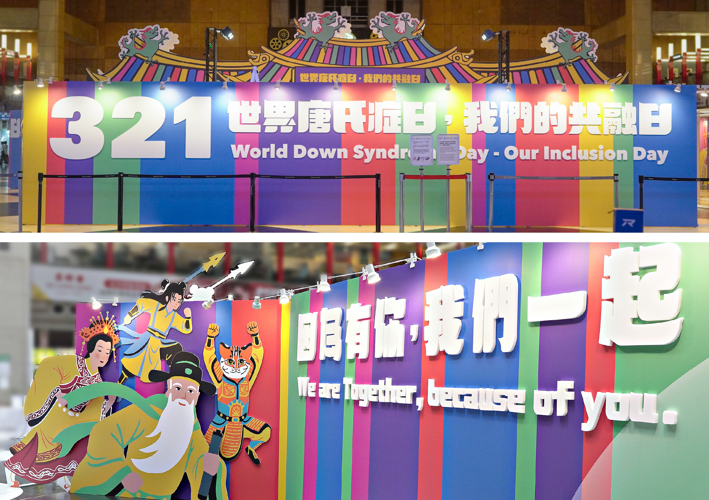
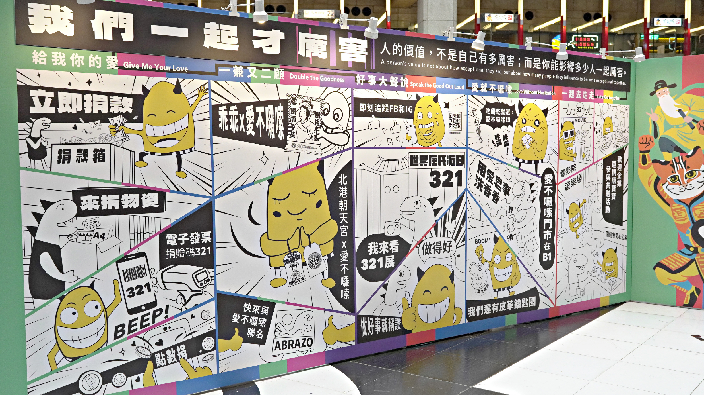
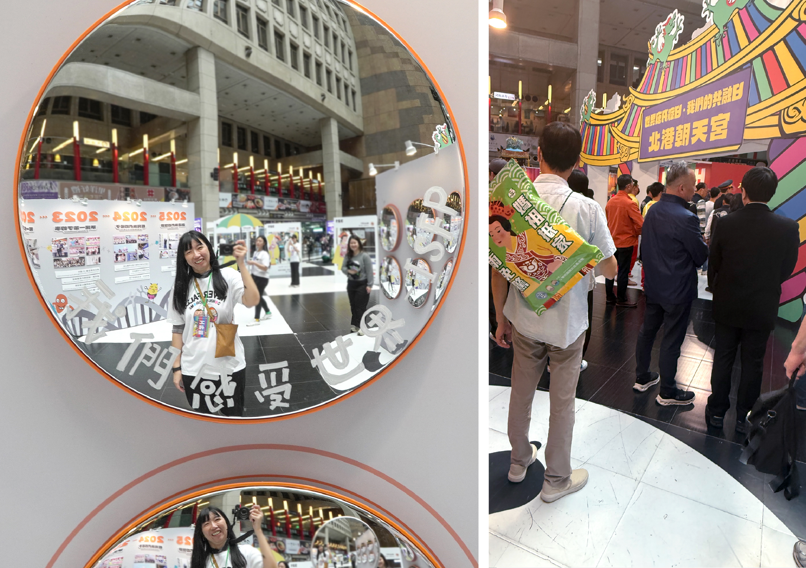
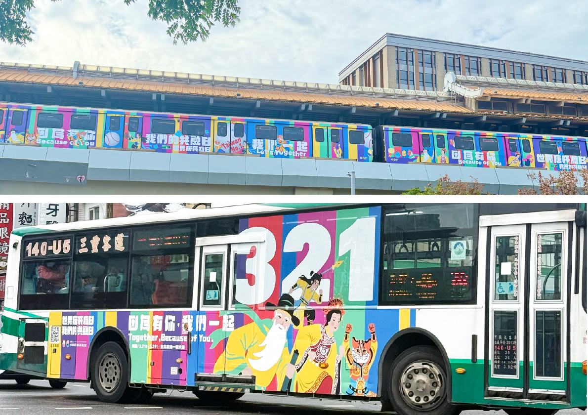
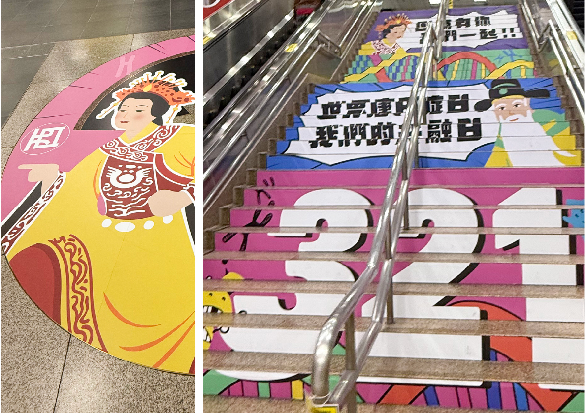
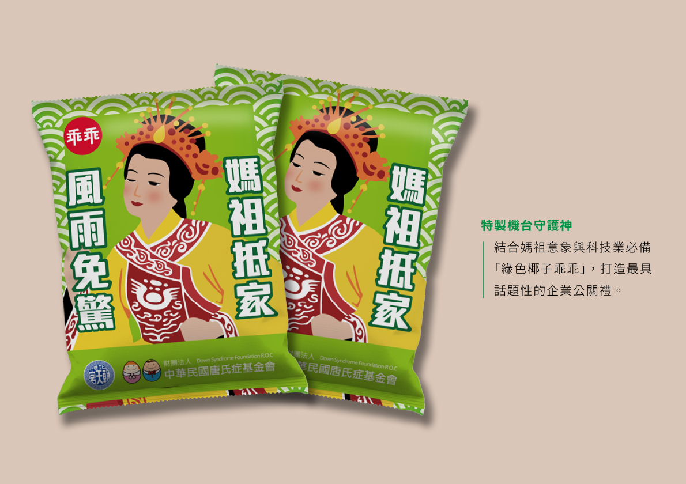

01展覽展示 · AI 流程
321 世界唐氏症日特展
抓出痛點：公益展覽難以吸引大眾主動靠近，同情、可憐嚴肅的議題，容易停留在同溫層。
為什麼這樣解？『共融』爲展覽溝通邏輯；色彩繽紛、流行、互動元素、民間信仰作為切入點——信仰是台灣最大公約數，把平權放進廟口文化，讓陌生的人從熟悉的地方走進來。以流行元素 IP 角色「F4 神明」為視覺核心；空間導入『通用設計』思維，將神轎加高 1.5 公尺，讓站立、乘坐或爬行的人都能在同一高度獲得祝福，空間設計本身就是平權宣言。
我做了什麼？展覽視覺落地執行：從 IP 視覺符號到用流行感的漫畫，將嚴肅的議題轉譯為有趣的故事。AI 流程輔助：敘事架構與圖文產製，大幅提升效率。商業價值延伸：展後周邊商品開發（如：乖乖『媽祖抵家風雨免驚』-椰子口味零食、F4神明護身符），讓善的循環持續流動。
展覽視覺
議題策展
AI 敘事





